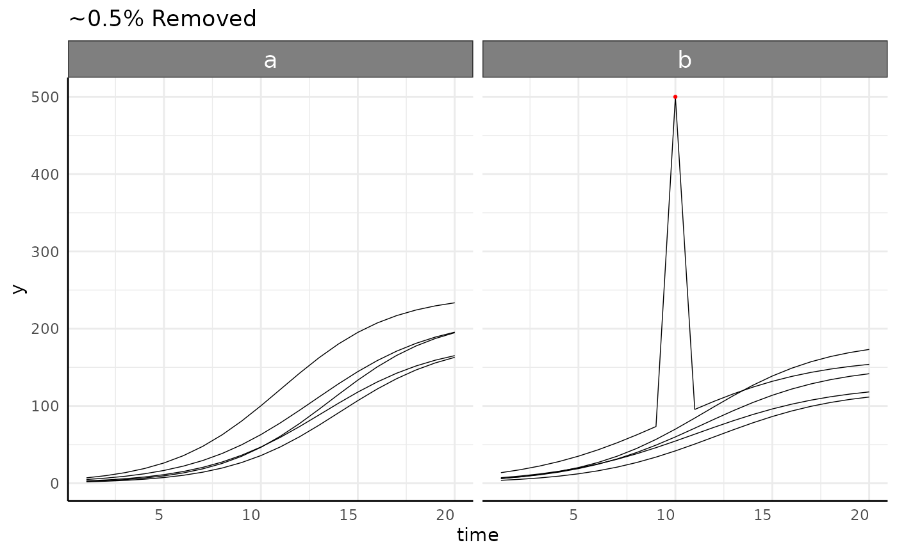

Remove outliers from bellwether data using cook's distance
Arguments
- df
Data frame to use. Can be in long or wide format.
- phenotype
Column to use to classify outliers. If this is length > 1 then it is taken as the multi-value traits to use. See examples.
- naTo0
Logical, should NA values to changed to 0.
- group
Grouping variables to find outliers as a character vector. This is typically time and design variables (DAS, genotype, treatment, etc). These are used as predictors for `phenotype` in a generalized linear model.
- cutoff
Cutoff for something being an "outlier" expressed as a multiplier on the mean of Cooks Distance for this data. This defaults to 5, with higher values being more conservative (removing less of the data).
- outlierMethod
Method to be used in detecting outliers. Currently "cooks" and "mahalanobis" distances are supported, with "mahalanobis" only being supported for multi-value traits.
- plotgroup
Grouping variables for drawing plots if plot=TRUE. Typically this is an identifier for images of a plant over time and defaults to c('barcode',"rotation").
- plot
Logical, if TRUE then a list is returned with a ggplot and a dataframe.
- x
Optional specification for x axis variable if plot is true. If left NULL (the default) then the first element of `group` is used.
- traitCol
Column with phenotype names, defaults to "trait". This should generally not need to be changed from the default. If this and valueCol are present in colnames(df) then the data is assumed to be in long format.
- valueCol
Column with phenotype values, defaults to "value". This should generally not need to be changed from the default.
- labelCol
Column with phenotype labels for long data, defaults to "label". This should generally not need to be changed from the default.
- idCol
Column(s) that identify individuals over time. Defaults to plotGroup.
- ncp
Optionally specify the number of principle components to be used for MV data outlier detection with cooks distance. If left NULL (the default) then 3 will be used.
- separate
Optionally separate the data by some variable to speed up the modeling step. If you have a design variable with very many levels then it may be helpful to separate by that variable. Note this will subset the data for each model so it will change the outlier removal (generally to be more conservative).
Value
The input dataframe with outliers removed and optionally a plot (if a plot is returned then output is a list).
Examples
## Not run:
sv <- growthSim("logistic",
n = 5, t = 20,
params = list("A" = c(200, 160), "B" = c(13, 11), "C" = c(3, 3.5))
)
sv[130, ]$y <- 500
sv_res <- bw.outliers(
df = sv, phenotype = "y", naTo0 = FALSE, cutoff = 15,
group = c("time", "group"), outlierMethod = "cooks",
plotgroup = "id", plot = TRUE
)
sv_res$plot

if(FALSE) {
library(data.table)
mvw <- read.pcv(paste0(
"https://media.githubusercontent.com/media/joshqsumner/",
"pcvrTestData/main/pcv4-multi-value-traits.csv"
), mode = "wide", reader = "fread")
mvw$genotype <- substr(mvw$barcode, 3, 5)
mvw$genotype <- ifelse(mvw$genotype == "002", "B73",
ifelse(mvw$genotype == "003", "W605S",
ifelse(mvw$genotype == "004", "MM", "Mo17")
)
)
mvw$fertilizer <- substr(mvw$barcode, 8, 8)
mvw$fertilizer <- ifelse(mvw$fertilizer == "A", "100",
ifelse(mvw$fertilizer == "B", "50", "0")
)
mvw <- bw.time(mvw, timeCol = "timestamp", group = "barcode", plot = FALSE)
phenotypes <- which(grepl("hue_freq", colnames(mvw)))
mvw2 <- bw.outliers(
df = mvw, phenotype = phenotypes, naTo0 = FALSE, outlierMethod = "cooks",
group = c("DAS", "genotype", "fertilizer"), cutoff = 3, plotgroup = c("barcode", "rotation")
)
mvl <- read.pcv(paste0(
"https://media.githubusercontent.com/media/joshqsumner/",
"pcvrTestData/main/pcv4-multi-value-traits.csv"
), mode = "long")
mvl$genotype <- substr(mvl$barcode, 3, 5)
mvl$genotype <- ifelse(mvl$genotype == "002", "B73",
ifelse(mvl$genotype == "003", "W605S",
ifelse(mvl$genotype == "004", "MM", "Mo17")
)
)
mvl$fertilizer <- substr(mvl$barcode, 8, 8)
mvl$fertilizer <- ifelse(mvl$fertilizer == "A", "100",
ifelse(mvl$fertilizer == "B", "50", "0")
)
mvl <- bw.time(mvl, timeCol = "timestamp", group = "barcode", plot = FALSE)
mvl2 <- bw.outliers(
df = mvl, phenotype = "hue_frequencies", naTo0 = FALSE, outlierMethod = "cooks",
group = c("DAS", "genotype", "fertilizer"), cutoff = 3, plotgroup = c("barcode", "rotation")
)
}
## End(Not run)